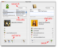
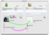

A free Mac OS X bridge application between Adium and Address Book, used to search, manage and keep your contacts in sync.
Manage:
- Add Adium contacts to Address Book.
- Update card's information using Adium data.
Search:
- Find an Adium contact in Address Book.
- Find an Address Book contact in Adium.
- Full text search for both applications.
Reports:
- Listing of contacts grouped by IM service.
- Contacts with/without picture.
- Contacts present in Adium but not in Address Book.
- Contacts present in Address Book but not in Adium.
KISS: Simple intuitive interface: one single window. No preferences, no drawers, no tabs, no popup, no splash, no funky window resizing — now it resizes :)
See also: Gmail to Jabber - Batch copy the Gmail email to the Jabber IM field in Address Book.
Download
- Price: Free
- License: Open Source (changelog, sources)
- Language: AppleScript
- Requires: Adium version 1.2 or later
After downloading, just open the ZIP file and drag AdiumBook to your Applications folder.
User Comments
- "Simple, clean, fast and extremely useful."
-
— Florian Beer
- "Useful, should be a default in Adium."
-
— Michele Bugliaro
- "On my Mac I’m migrating from Entourage to Mail.app and I haven’t been looking forward to transferring my contacts. This awesome program called AdiumBook has made this process extremely easy because almost all of my contacts are in my IM client, Adium."
-
— Jamie
- "Thanks for a great app! For some reason AOL deleted most of the contacts from my buddy list the other day, and Adium responded by removing them from its contact list. I had many of my contacts in my Address Book so your AdiumBook app was a tremendous help."
- — John H.
Read more comments...
ScreenShots
|

|
Interface components |

|
Text search (1) and cross search (2) for both applications |
|

|
Nice buttons to copy IM and picture from Adium to Address Book |

|
Handy button to add the Adium contact to Address Book, with name, IM and picture |

|
Reports Menu full of goodies |
Thank You
- Alan Schmitt — Bug reports
- Alfredo Kojima — Testing, Xcode/IB help, Tiger issues, UI design ideas, feature ideas
- André Ruiz — UI design ideas, feature ideas
- Arthur Klepchukov - Feature ideas
- Brian Exelbierd - Feature ideas
- Eliphas Levy — UI design ideas
- Guilherme Manika — Testing, Tiger issues, feature ideas
- Fabio J. Augusto — Testing, UI design ideas, feature ideas
- Felix Müeller — Bug reports
- Jannis Hermanns — Mirror space
- John Haiducek — UI design ideas, feature ideas, bug reports
- John Mora — Feature ideas
- Juan Jose Lopez Juarez - Feature ideas
- Ken Raeburn — Feature ideas, bug reports
- Nik.ca — Version Tracker announce
- Pavel Zavyalov - Documentation fixes
- Rodrigo Novo — UI design ideas
- Rudá Moura — Testing
- Bernardo Hoehl, Cliff Pruitt, Neil Faiman — Adium install check
- Apple documentation team — Great docs, easy learning
- Everybody who reported/helped an issue
Known Issues
Issues in Snow Leopard
If you upgraded your system to Snow Leopard, some reports will stop to work and the Set IM button won't save the changes to Address Book.
Those issues were fixed at the AdiumBook 1.5 - Snow Leopard release.
Adium Book got an error: Can’t make every «class ltct» into type reference. (-1700)
If you're in Leopard, you need to upgrade AdiumBook to version 1.4 or newer.
If you're in Tiger, you need to upgrade Adium to 1.3 or newer.
Adium got an error: Can't make id of account of every contact into type reference. (-1700)
This issue was fixed in Adium version 1.3, so just upgrade it.
I get the “NSReceiverEvaluationScriptError: 4 (1)” error
This kind of error is usually caused by third party applications that change the default Mac OS X behavior, such as SIMBL plugins. Just disable the plugin and the error will be gone. Already reported incompatible plugins: megazoomer, SelectionFix.
To check if this is your case, do the following:
- Run /Applications/Console.app and click on the “Clear” button.
- Run AdiumBook and use it until the error appears.
- Back to Console.app window, search for any related error message.
I can't see the scroll bars
TinkerTool has an option to put a pair of scroll buttons on both the top and the bottom of all scroll bars. It warns that this setting might cause some scroll bars to display incorrectly. Now you are experiencing this problems :)
-- Submitted by John Haiducek


{kind=link}
{kind=link}